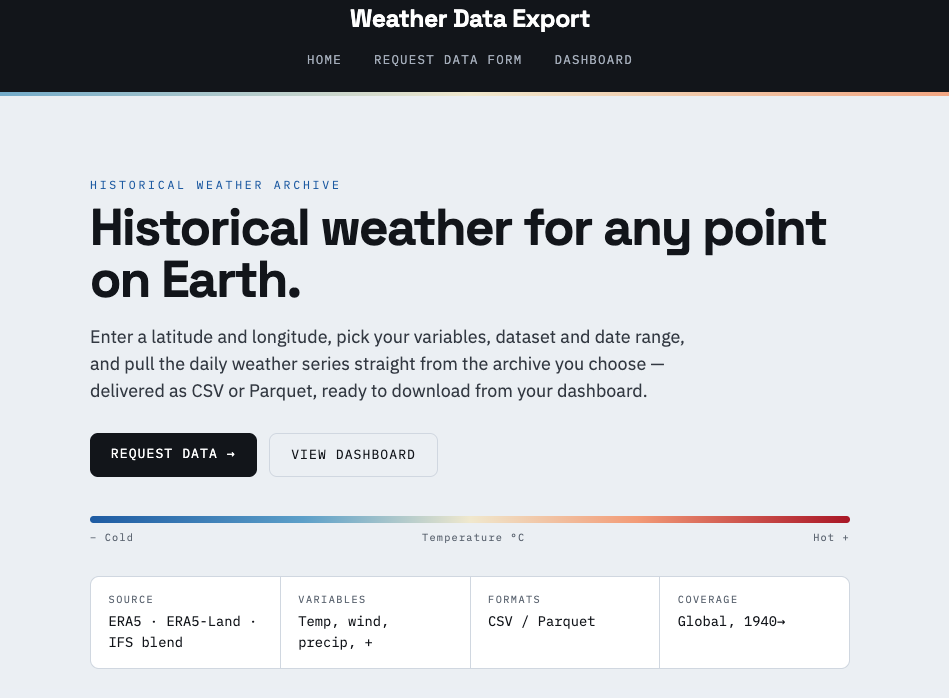
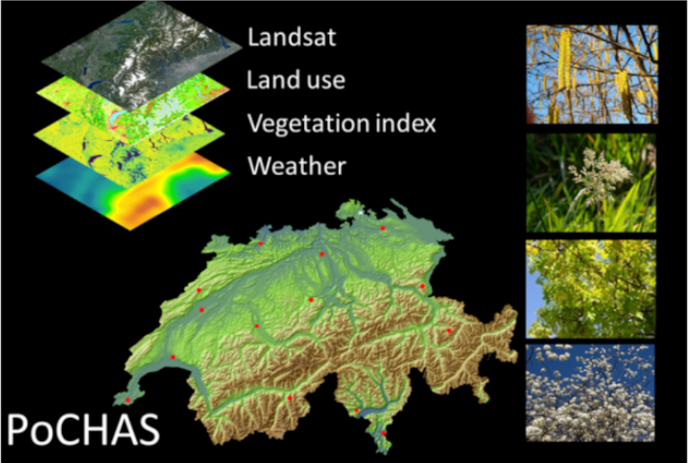
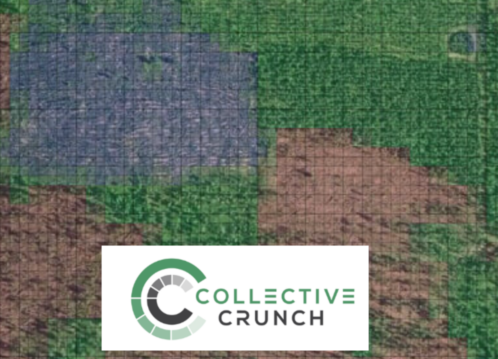
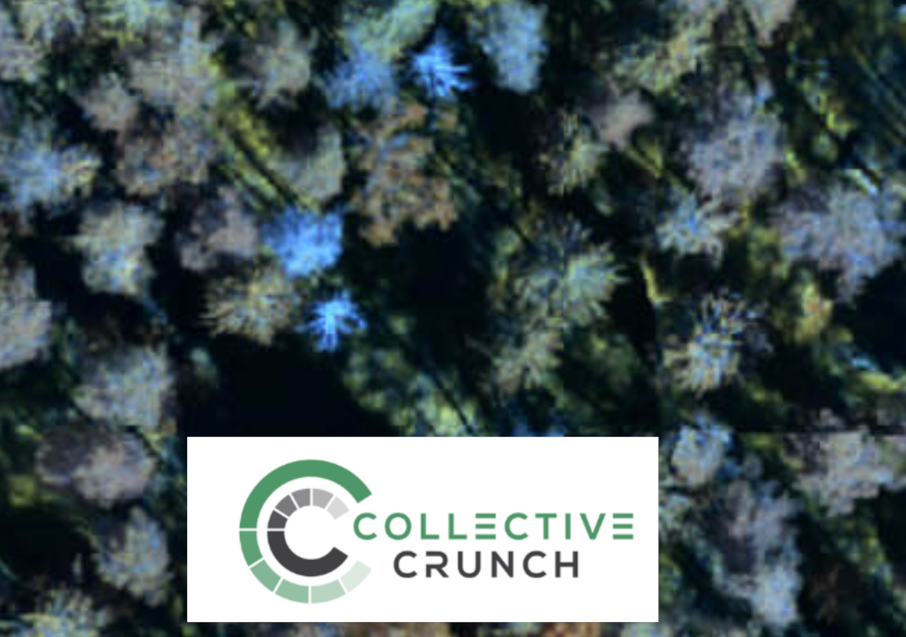
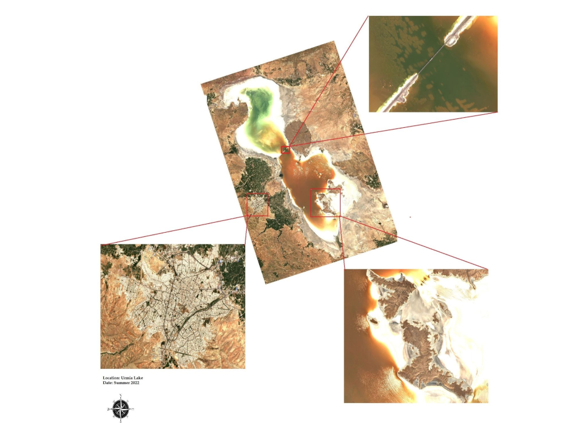
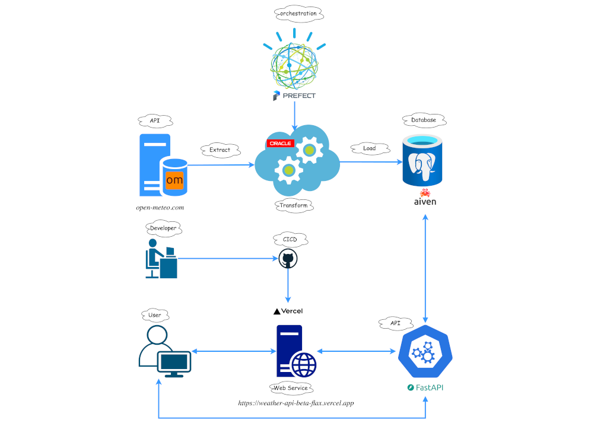

Senior Software Engineer @ Newcastle University
Behzad Valipour Sh.
I build
Data & Machine Learning Engineer with a PhD and 8+ years turning messy, large-scale data into production ML models and scalable cloud pipelines. I own the full stack — from satellite imagery and data engineering to model deployment on Azure, AWS and HPC.
Featured on GitHub
- Enhancement_of_MODIS_NIDVI Super-resolution of MODIS NDVI to 10 m using a U-Net deep-learning model.
- Patch_wise_Land_Cover_Classification Patch-wise land-cover classification from Sentinel-2 imagery with deep learning.
- Wind_Turbines_Classification Detecting and classifying wind turbines from satellite imagery.
About
Turning data into decisions
Newcastle, UK
I’m a data and ML engineer who is equally comfortable wrangling petabytes of satellite imagery, training models, and standing up the cloud infrastructure that serves them.
I currently lead the Research Software Engineering team at Newcastle University, where I manage four engineers building scalable geospatial data pipelines and tools for the Imago project — part of Smart Data Research UK. We process large geospatial datasets on HPC (Comet), integrate diverse data sources, and ship a data catalogue researchers actually use.
Before this I built household-level heat-exposure models across Wales and London on the Wellcome-funded MAGENTA project, and completed a PhD in Environmental Epidemiology at Swiss TPH / University of Basel — where I built the first spatio-temporal ML model for pollen concentration at 1 km resolution across Switzerland. In industry I shipped forest-damage and cloudless-mosaic products from satellite data that directly drove new revenue.
- End-to-end ownership: data → model → deployment
- Multi-cloud: Azure & AWS, plus on-prem HPC
- Reproducible, tested, CI/CD-driven pipelines
- Team lead & open-science contributor
Technical stack
What I build with
A pragmatic toolkit spanning data science, data engineering, MLOps and cloud — chosen to ship reliable systems, not to collect logos.
ML & Data Science
Data Engineering
Cloud & DevOps
Geospatial & Remote Sensing
Practices
Experience
Where I’ve made an impact
Senior Software Engineer & RSE Lead · Newcastle University
Present- Lead a team of four engineers building scalable geospatial data pipelines for public health, urban planning and environmental research.
- Run reproducible workflows over large datasets on HPC (Comet), integrating diverse sources into a public data catalogue.
- Own the platform from ingestion to a user-facing interface researchers rely on daily.
GIS Data Scientist · Swansea University
MAGENTA- Led WP1: built a 1×1 km heat-exposure model and managed environmental data pipelines for the UK.
- Fused satellite, weather-station and land-use data into high-resolution, household-level exposure maps for Wales and London.
- Partnered with epidemiologists on analyses feeding several high-impact publications.
PhD, Environmental Epidemiology · Swiss TPH / University of Basel
PoCHAS- Built the first spatio-temporal ML model predicting allergenic pollen at 1×1 km across Switzerland.
- Authored the pochas-geoutils Python package for large-scale spatiotemporal ETL and modelling.
- Benchmarked Random Forest, XGBoost, ANN and regularised linear models; shipped a GIS web app for forecasts.
Geospatial Data Scientist · CollectiveCrunch oy.
Industry- Designed a CNN detecting wind damage from country-wide radar imagery (91% AUC) — launched as a commercial product.
- Built a dead-tree / bark-beetle detector from aerial imagery at 99% test accuracy, driving new sales and customers.
- Engineered national-scale cloudless satellite mosaics from Sentinel-2 and Landsat.
GIS Specialist · Regio OÜ
Industry- Automated the generation of last-mile internet connection routes from GIS data, sharply improving network-planning efficiency.
Selected work
Projects that shipped
End-to-end systems across research, industry and open source — data engineering, machine learning and cloud delivery, with measurable outcomes.

Featured · End-to-end data engineering
Weather Datahub
A self-serve export tool for the ERA5 archive: pick a point, a date range, the variables and the dataset, and get a daily series back as CSV or Parquet. A Flask app fetches from Open-Meteo in the background, resamples hourly to daily in pandas, and tracks every request in PostgreSQL.

PoCHAS — Pollen Forecasting for Switzerland
First spatio-temporal ML model for allergenic pollen at 1 km resolution. Built the pochas-geoutils package for MODIS/Landsat/ERA5 ETL, benchmarked RF, XGBoost, ANN and regularised models, and shipped a GIS web app for location-specific forecasts.
MAGENTA — Heat-Exposure Modelling
Longitudinal, household-level ML models of heat-stress exposure for every home in Wales and London, fusing earth observation, meteorological, housing and qualitative data through reproducible, documented pipelines.

Wind-Damage Detection (CNN)
Processed country-wide radar satellite imagery and designed a CNN to detect wind-damaged forest stands at 91% AUC — launched as a commercial product that increased sales and won new customers.

Dead-Tree Detection
Machine-learning model detecting dead trees from aerial imagery at 99% test accuracy, powering the launch of a bark-beetle monitoring product and unlocking new revenue streams.

Cloudless Satellite Mosaics
Designed a scalable compositing process that stitches many Sentinel-2 and Landsat scenes into seamless, cloud-free national mosaics — reused across the Imago, CollectiveCrunch and PoCHAS projects.

Weather Data Pipeline & API
Personal end-to-end project: Open-Meteo → Prefect-orchestrated ELT → managed PostgreSQL → FastAPI, with GitHub Actions CI/CD and serverless deploy. A compact showcase of production data-engineering practice.
Writing
Notes on data, ML & geospatial
I write tutorials, project write-ups and applied-research notes on spatial data processing, remote sensing and scalable geospatial workflows.
- Loading posts…
Contact
Let’s build something together
I’m always open to new collaborations and interesting projects. The fastest way to reach me is email.
email@behzadvalipour.co.uk